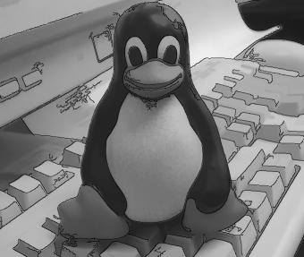

PARP Research Group
PARP Research Group
| PARP Research Group |
Universidad de Murcia |
QVision: Computer Vision Library for Qt0.8.1

What is QVision?The QVision is a free and open source library oriented to the development of computer vision, image/video processing, and scientific computing applications. It is based on the Qt application framework, so it is an object-oriented and cross-platform library for C++. The library is mainly intended for educational and research purposes, usability and performance. It has a clean and well documented, Qt-style, object oriented API, which provides functionality for:
The developer can use the library to rapidly create fully working applications or test new algorithms without investing too much time and effort in technical or programming details not essentially related to computer vision or image processing, such as the development of the graphical interface, image and video input/output, interacting with third party libraries, like the Intel(R) Integrated Performance Primitives (IPP) (for efficient low-level image processing), the OpenCV (for extended computer vision and machine learning functionality), GSL - GNU Scientific Library (for general scientific computation and math calculus), and so on. The QVision takes advantage of these top-performance libraries, so the developer can use their functionality within a clean object oriented API. For example, QVision object types for images, vectors and matrices adapt their methods to use the IPP and GSL functionality for low-level image processing and matrix algebra when these libraries are available. For more comprehensible information about the QVision you can visit the different sections of this documentation:
Copyright, license and warranty.Copyright © 2007, 2008, 2009, 2010, 2011, 2012. PARP Research Group. University of Murcia, Spain. QVision is free software: you can redistribute it and/or modify it under the terms of the GNU Lesser General Public License as published by the Free Software Foundation, version 3 of the license. QVision is distributed in the hope that it will be useful, but WITHOUT ANY WARRANTY; without even the implied warranty of MERCHANTABILITY or FITNESS FOR A PARTICULAR PURPOSE. See the GNU General Public License for more details. You should have received a copy of the GNU Lesser General Public License along with QVision. If not, see <http://www.gnu.org/licenses/>. Feedback and contact informationIf you have bug reports or interesting suggestions about the library, please create a ticket at the trac, post them in the forum, or contact the authors through e-mail: Pedro E. López de Teruel Alcolea <pedroe@um.es> AcknowledgementsThe following is a list of people who provided important contributions to the QVision library: Eduardo Iniesta Soto <einiesta@ditec.um.es> contributed with the linear time implementation of the MSER algorithm. |